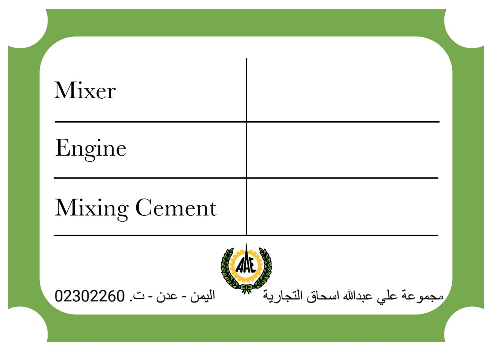
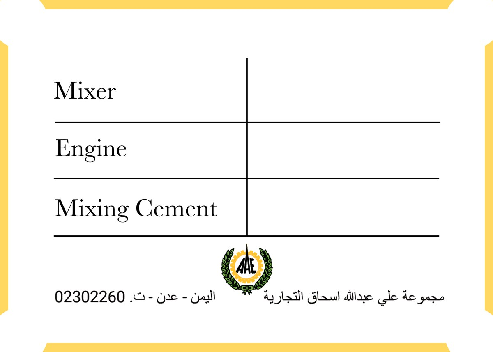
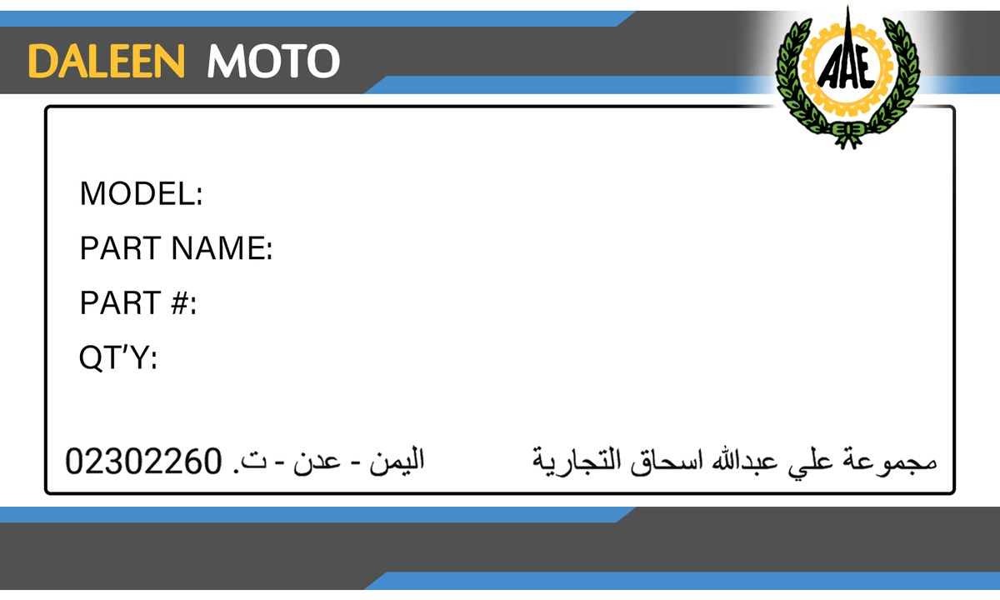

AAE & Daleen Moto — identity refresh and labelling system
2017 · Aden, Yemen · first international clients
A college friend moved home to Yemen and brought me in with his father to bring the family group's look forward — modernising the marks and the printed collateral without losing what the business already had.
Functional before decorative. These are working labels, not brand slides: ruled fields sized for handwriting, filled in at dispatch. The layout had to survive a pen and a warehouse.
The two AAE labels are one design in two colourways — same grid, same hierarchy, colour as the only variable, so product categories separate on a shelf without a second layout to maintain. The Daleen Moto label runs a different header for the automotive arm but carries the AAE crest and the same group line, keeping the subsidiary visibly under the parent.
Both are set bilingually — English field labels reading left to right, the Arabic company line reading right to left, sharing one baseline at the foot of the label.
- Client
- AAE · Daleen Moto
- Sector
- Industrial & agricultural equipment · automotive
- Market
- Aden, Yemen
- Role
- Identity refresh, collateral design
- Year
- 2017